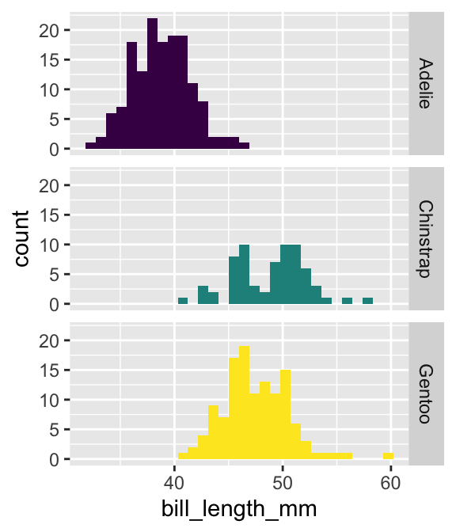
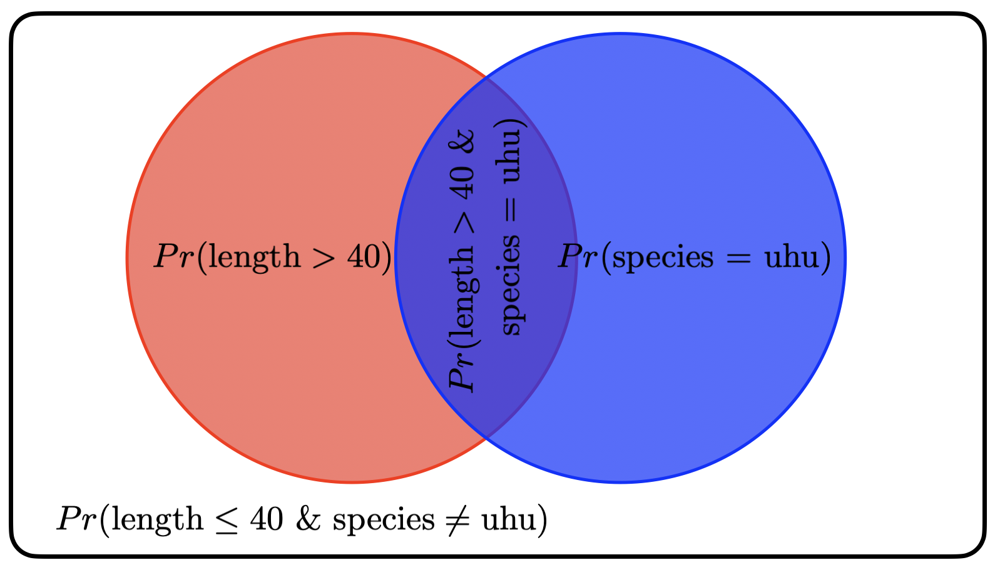
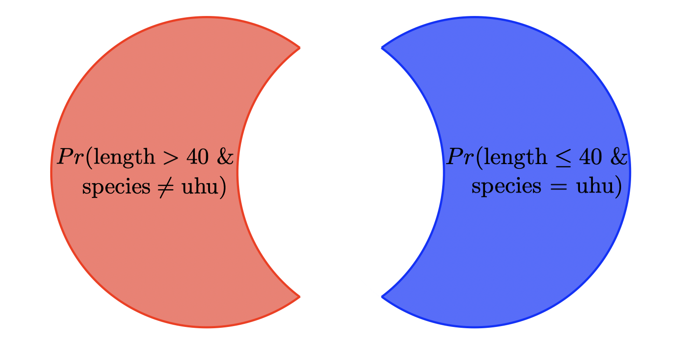

library(palmerpenguins)
# probability species is "Adelie"
Pr_adelie <- sum(penguins$species == "Adelie") / nrow(penguins)
Pr_adelie[1] 0.4418605sample to simulate events with different probabilitiesBefore starting the main content of this lab, take a few minutes to introduce yourselves to your group members and exchange email addresses so you can communicate about your group projects.
We’ll use our old friend the Palmer penguins data set. Let’s first look at some simple probabilities:
library(palmerpenguins)
# probability species is "Adelie"
Pr_adelie <- sum(penguins$species == "Adelie") / nrow(penguins)
Pr_adelie[1] 0.4418605So there is a 0.44 probability that if we grabbed a penguin out of this dataset it would belong to the Adelie species. The random trial here is “grabbing” a penguin, and the event of interest is that its species is Adelie.
Notice how we’re calculating the probability. First we use penguins$species == "Adelie" to ask R to tell us TRUE ever time it finds the species is Adelie and FALSE ever time it finds the spcies to not be Adelie.
Then we wrap those TRUE and FALSE values in sum:
sum(penguins$species == "Adelie")[1] 152That sum tells us the total number of TRUE values, aka the total number of penguins of species Adelie in the data.
Finally we divide by nrow(penguins) to turn the count into a probability. That’s the definition of probability: the proportion of times an event is true.
We can also look at probabilities of numerical data, like the bill length
# probability bill length is less than 45
Pr_bill_l_less45 <- sum(penguins$bill_length_mm < 45) / nrow(penguins)
Pr_bill_l_less45[1] NAWe got NA?! The reason is that the bill length column has some missing data. We’ve dealt with that before by using subset to remove rows with missing data. Here we will learn a new approach: telling sum to ignore NA values:
# probability bill length is less than 45
Pr_bill_l_less45 <- sum(penguins$bill_length_mm < 45, na.rm = TRUE) /
nrow(penguins)
Pr_bill_l_less45[1] 0.5116279So there is a 0.51 probability of randomly grabbing a penguin from these data and its bill being less than 45 mm long.
Interestingly, taking the sum of something and then dividing by sample size is also the definition of the mean, so we can take a shortcut and just use the mean function:
# probability bill length is less than 45
Pr_bill_l_less45 <- mean(penguins$bill_length_mm < 45, na.rm = TRUE)
Pr_bill_l_less45[1] 0.5146199Same answer.
Now let’s calculate some joint probabilities. What’s the probability that the bill length is less than 45 AND the species is Adelie? To save us some typing, let’s call this probability pAl45
pAl45 <- mean(penguins$bill_length_mm < 45 &
penguins$species == "Adelie",
na.rm = TRUE)
pAl45[1] 0.4314869Interesting, \(Pr(\text{bill length} < 45)\) and \(Pr(\text{bill length} < 45 \text{ \& Adelie})\) are about the same, could that mean that bill length and species are independent? To figure out, we need to calculate \(Pr(\text{bill length} < 45)\) and \(Pr(\text{bill length} < 45 \mid \text{Adelie})\) and see if the two probabilities are roughly the same.
The expression \(Pr(\text{bill length} < 45 \mid \text{Adelie})\) tells us that we already know the species is Adelie. That means to caculate the probability bill length < 45 GIVEN Adelie, we need to ignore all the rest of the data
# subest to just Adelie
justAdelie <- subset(penguins, penguins$species == "Adelie")
# now the conditional probability, is calculated just by counting up
# cases where bill length < 45
pl45GivenA <- mean(justAdelie$bill_length_mm < 45, na.rm = TRUE)
pl45GivenA[1] 0.9801325Recall that \(Pr(\text{bill length} < 45)\) = 0.51 which is vastly different from \(Pr(\text{bill length} < 45 \mid \text{Adelie})\) = 0.98 so we conclude that no, bill length and species are not independent.
We can confirm this by visualizing the histograms: different penguin species have different distributions of bill lengths, again confirming that the two variables are not indipendent.
library(ggplot2)
ggplot(penguins, aes(x = bill_length_mm, fill = species)) +
geom_histogram() +
facet_grid(rows = vars(species)) +
theme(legend.position = "none") +
scale_fill_viridis_d()
sampleYou’ve seen us use the sample function all the time. We can take a random sample of integers:
# randomly sample 3 numbers between 1 and 10
sample(1:10, 3)[1] 3 10 5We can also sample characters:
# sample 5 letters from A, B, C with replacement
sample(c("A", "B", "C"), 5, replace = TRUE)[1] "B" "C" "B" "A" "B"Try running the above code without setting replace = TRUE
sample(c("A", "B", "C"), 5)You’ll get an error like this:
Error in sample.int(length(x), size, replace, prob) :
cannot take a sample larger than the population when 'replace = FALSE'That’s because we’re trying to sample 5 random events from only 3 possible outcomes. We have to “replace” each outcome once we sampled it.
We can also sample with replacement when our number of random draws is less than the total number of outcomes:
# randomly sample 3 numbers between 1 and 10
sample(1:10, 3, replace = TRUE)[1] 8 6 4We can also change the frequency of different outcomes by changing the probability that R assigns to them!
# randomly sample 3 numbers between 1 and 10
sample(c("A", "B", "C"), 5, replace = TRUE, prob = c(0.8, 0.1, 0.1))[1] "A" "B" "A" "A" "A"The above code will yield 80% “A”, and 10% of both “B” and “C” if we run it over and over.
The probabilities need to sum to 1 across all the outcomes because that’s one of the rules of probability. R will automatically do that for you, even if you don’t re-scale the probabilities yourself. For example, this code is equivalent:
# randomly sample 3 numbers between 1 and 10
sample(c("A", "B", "C"), 5, replace = TRUE, prob = c(8, 1, 1))[1] "A" "A" "A" "B" "A"The exact events will be different because each time you run it is a random trial.
In questions 1–4 you will simulate data using the sample function and use the resulting data.frame to evaluate probabilities
Use sample to make a data.frame with 40 rows and 2 columns: x and y. Column x should be filled with a random sample of the the integers 1 and 2, each with equal probability; column y should be filled with a random sample of the letters A and B, each with equal probability.
The data.frame you made in (1.) should have two independent columns (i.e. you were not instructed to use any code that would cause the events in column y to depend on the events in column x). To confirm their independence calculate \(Pr(y = A | x = 1)\) and \(Pr(y = A)\) and evaluate if they are close to the same value. If at first they are not, try re-running the code a few times (each time will be different, you’re making random data!). In most of the times you re-run the code, the difference between \(Pr(y = A | x = 1)\) and \(Pr(y = A)\) should be between -0.1 and 0.1
Given that we simulate y and x as independent, why do we find that \(Pr(y = A | x = 1)\) and \(Pr(y = A)\) and not exactly equal? If we simulated a data.frame with 80 rows, would you expect \(Pr(y = A | x = 1)\) and \(Pr(y = A)\) to be more closely equal or more different? Why?
Discuss in 2 to 3 sentence how you could change the code in (2.) to simulate non-independence between the events in column x and column y. You do not need to implement this code, just discuss
Questions 5–7 will revisit the visualization of probabilities as overlapping circles that we used in class. NOTE: this is the same concept as what we covered in class, but the actual probabilities will be different

